Inicio › Routers y redes
Routers y redes: precios en Honduras y dónde comprar más barato
124 productos de 4 tiendas, con el precio de cada una. Actualizado el 14 de noviembre de 2026.
Routers y redes REDRouters y redes Tp-LinkRouters y redes CUDYRouters y redes MercusysRouters y redes PointRouters y redes TplinkRouters y redes LinksysRouters y redes Hikvision
 Router Mercusys 300Mbps 4g Lte Cat4 2.4Ghz Ac1200 Dual BandL 1,495En 2 tiendas · más barato en Sycom
Router Mercusys 300Mbps 4g Lte Cat4 2.4Ghz Ac1200 Dual BandL 1,495En 2 tiendas · más barato en Sycom Tarjeta de Red PCIE TPLINK Archer TX55E AX3000 Dual Band + Bluetooth 5.3L 1,150En Sycom
Tarjeta de Red PCIE TPLINK Archer TX55E AX3000 Dual Band + Bluetooth 5.3L 1,150En Sycom Router Inalambrico MERCUSYS AC12G AC1300 Dual BandL 1,150En Sycom
Router Inalambrico MERCUSYS AC12G AC1300 Dual BandL 1,150En Sycom Tarjeta de Red USB Wifi TP-Link Archer ARCHER TX50UH AX3000 Dual BandL 1,150En Sycom
Tarjeta de Red USB Wifi TP-Link Archer ARCHER TX50UH AX3000 Dual BandL 1,150En Sycom Tarjeta de Red USB Wifi TPLINK Archer TX20UH AX1800L 1,150En Sycom
Tarjeta de Red USB Wifi TPLINK Archer TX20UH AX1800L 1,150En Sycom Switch 5 Puertos 10/100 Mbps C/Poe+ 4 Puertos Tp-Link P/Escritorio Tl-Sf1005PL 1,119En Acosa
Switch 5 Puertos 10/100 Mbps C/Poe+ 4 Puertos Tp-Link P/Escritorio Tl-Sf1005PL 1,119En Acosa Switch 5 Puertos 10/100/1000 Mbps Gigabit C/Poe+ Cudy 120WL 1,184.99En Acosa
Switch 5 Puertos 10/100/1000 Mbps Gigabit C/Poe+ Cudy 120WL 1,184.99En Acosa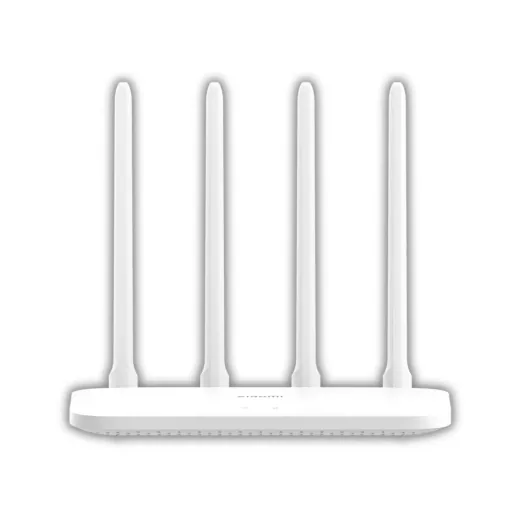
Router Xiaomi AC1200/Doble NucleoL 1,190En Diunsa Router Inalámbrico Portátil MERCUSYS 4G LTE · 150 Mbps 2, 4 GHz Batería 2200 mAh MT110L 1,195En Sycom
Router Inalámbrico Portátil MERCUSYS 4G LTE · 150 Mbps 2, 4 GHz Batería 2200 mAh MT110L 1,195En Sycom Tarjeta de Red PCIE TPLINK Archer T6E AC1300 Dual BandL 1,200En Sycom
Tarjeta de Red PCIE TPLINK Archer T6E AC1300 Dual BandL 1,200En Sycom Router Hikvison 1200Mbps Inalambrico 2.4Ghz Wifi 6 Ds-3Wr15XL 1,095En Acosa
Router Hikvison 1200Mbps Inalambrico 2.4Ghz Wifi 6 Ds-3Wr15XL 1,095En Acosa Router Cudy Gpon 2488Gbps 5Ghz AC1200 Dual BandL 1,095En Acosa
Router Cudy Gpon 2488Gbps 5Ghz AC1200 Dual BandL 1,095En Acosa Router Cudy 2976Mbps Gigabit 5Ghz Ax3000 Dual BandL 1,225En Acosa
Router Cudy 2976Mbps Gigabit 5Ghz Ax3000 Dual BandL 1,225En Acosa Router Mercusys N MW330HP 2.4 GHz · 3 x Antenas 7dbi · 300Mbps · 3 x LAN 10/100 Mbps · 1 x WAN 10/100 MbpsL 445En 2 tiendas · más barato en Acosa
Router Mercusys N MW330HP 2.4 GHz · 3 x Antenas 7dbi · 300Mbps · 3 x LAN 10/100 Mbps · 1 x WAN 10/100 MbpsL 445En 2 tiendas · más barato en Acosa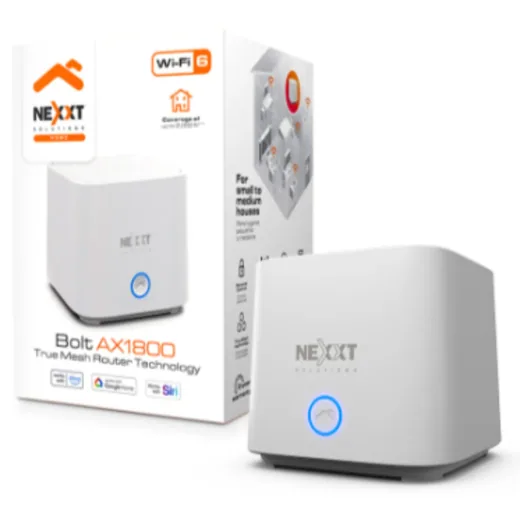
Router Nexxt Home/Bolt Mesh/Wi-fiL 1,290En Diunsa Router Inalambrico Linksys LN3101-LA AC1200L 1,295En Sycom
Router Inalambrico Linksys LN3101-LA AC1200L 1,295En Sycom Tarjeta de Red USB Wifi 5 Linksys WUSB6300 AC1200 Dual BandL 1,295En Sycom
Tarjeta de Red USB Wifi 5 Linksys WUSB6300 AC1200 Dual BandL 1,295En Sycom Switch 6 Puertos 10/100 Mbps C/Poe+ 4 Puertos Tp-Link Para Escritorio Tl-Sf1006PL 1,299.01En Acosa
Switch 6 Puertos 10/100 Mbps C/Poe+ 4 Puertos Tp-Link Para Escritorio Tl-Sf1006PL 1,299.01En Acosa Tarjeta de Red PCIE Inalambrico Cudy WE3000 AX3000 Dual Band Wifi 6E + Bluetooth 5.2L 950En Sycom
Tarjeta de Red PCIE Inalambrico Cudy WE3000 AX3000 Dual Band Wifi 6E + Bluetooth 5.2L 950En Sycom Router Inalambrico TPLINK Archer C50 AC1200 Dual BandL 945En Sycom
Router Inalambrico TPLINK Archer C50 AC1200 Dual BandL 945En Sycom Tarjeta de Red USB Wifi TPLINK Archer T9UH AC1900 Dual BandL 1,400En Sycom
Tarjeta de Red USB Wifi TPLINK Archer T9UH AC1900 Dual BandL 1,400En Sycom Router Tp-Link 1200mbps Inalambrico 2.4ghz Ac1200 Dual Band 4 Antenas ExterL 939En Acosa
Router Tp-Link 1200mbps Inalambrico 2.4ghz Ac1200 Dual Band 4 Antenas ExterL 939En Acosa Router Inalambrico TPLINK Archer AX12 AX1500 Dual Band Wifi 6 N/DL 1,485En Sycom
Router Inalambrico TPLINK Archer AX12 AX1500 Dual Band Wifi 6 N/DL 1,485En Sycom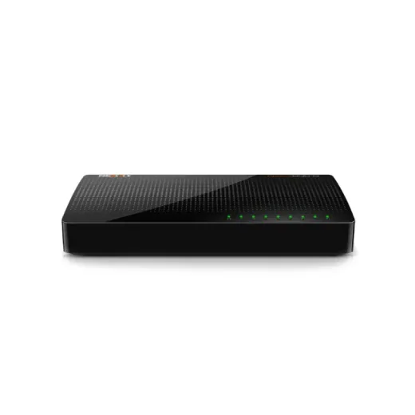
Switch 8 Puertos 10/100 Naxos800g Para Escritorio Nexxt Asbdt084u2L 885.01En Acosa Router Tp-Link 1201Mbps Inalambrico 5Ghz Ax1500 Dual Band Wifi 6L 1,495En Acosa
Router Tp-Link 1201Mbps Inalambrico 5Ghz Ax1500 Dual Band Wifi 6L 1,495En Acosa Router Alambrico TPLINK Balance Broadband TL-R480T+ RackeableL 1,495En Sycom
Router Alambrico TPLINK Balance Broadband TL-R480T+ RackeableL 1,495En Sycom Access Point Cudy 867Mbps Gigabit 5Ghz Dual Band Para Exterior Ac1200L 1,505.01En Acosa
Access Point Cudy 867Mbps Gigabit 5Ghz Dual Band Para Exterior Ac1200L 1,505.01En Acosa Switch 16 Puertos 10/100 Mbps Tp-Link De Escritorio Tl-Sf1016DL 869En Acosa
Switch 16 Puertos 10/100 Mbps Tp-Link De Escritorio Tl-Sf1016DL 869En Acosa Repetidor Tp-Link 750Mbps Dual Band 2.4Ghz D/Pared Re205 Ac750L 869En Acosa
Repetidor Tp-Link 750Mbps Dual Band 2.4Ghz D/Pared Re205 Ac750L 869En Acosa Access Point Tp-Link 450Mbps 2.4Ghz Tl-Wa901NL 866.61En Acosa
Access Point Tp-Link 450Mbps 2.4Ghz Tl-Wa901NL 866.61En Acosa Router Tp-Link 1900Mbps Inalambrico-N 2.4Ghz Doble Banda AC1900 Mu-MimoL 1,549En Acosa
Router Tp-Link 1900Mbps Inalambrico-N 2.4Ghz Doble Banda AC1900 Mu-MimoL 1,549En Acosa Tarjeta de Red USB Wifi TP-Link Archer T4U PLUS AC1300 Dual BandL 850En Sycom
Tarjeta de Red USB Wifi TP-Link Archer T4U PLUS AC1300 Dual BandL 850En Sycom Router Cudy 4G 300Mbps Inalambrico 2.4Ghz N300 Dual BandL 1,559En Acosa
Router Cudy 4G 300Mbps Inalambrico 2.4Ghz N300 Dual BandL 1,559En Acosa Router Linksys EA6350-4B 1000 Pies CoberL 845En Lady Lee
Router Linksys EA6350-4B 1000 Pies CoberL 845En Lady Lee Repetidor Cudy 2402Mbps Dual Band 5Ghz Wifi 6 Ax3000L 1,595En Acosa
Repetidor Cudy 2402Mbps Dual Band 5Ghz Wifi 6 Ax3000L 1,595En Acosa Router inalambrico TPLINK Archer C80 AC1900 MU-MIMO N/DL 1,595En Sycom
Router inalambrico TPLINK Archer C80 AC1900 MU-MIMO N/DL 1,595En Sycom Router Inalambrico MERCUSYS MR60X AX1500 Wifi 6L 1,595En Sycom
Router Inalambrico MERCUSYS MR60X AX1500 Wifi 6L 1,595En Sycom Switch 8 Puertos 10/100/1000 Mbps C/Poe Cudy P/Escritorio/Rack Gs1010PL 1,695En Acosa
Switch 8 Puertos 10/100/1000 Mbps C/Poe Cudy P/Escritorio/Rack Gs1010PL 1,695En Acosa Router Mercusys Mesh Halo H50G(2-pack) AC1900 Dual BandL 1,725En Sycom
Router Mercusys Mesh Halo H50G(2-pack) AC1900 Dual BandL 1,725En Sycom Tarjeta de Red PCIE Wifi TPLINK Archer T4E 1200MbpsL 750En Sycom
Tarjeta de Red PCIE Wifi TPLINK Archer T4E 1200MbpsL 750En Sycom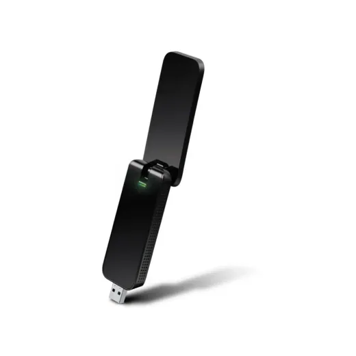
Tarjeta de Red USB Wifi TPLINK Archer T4U AC1300 Dual BandL 750En Sycom Access Point TPLINK MU-MIMO AC1200 EAP235-WALL OmadaL 1,795En Sycom
Access Point TPLINK MU-MIMO AC1200 EAP235-WALL OmadaL 1,795En Sycom Switch 8 Puertos 10/100/1000 Mbps Tp-Link P/Escritorio Tl-Sg1008dL 709En Acosa
Switch 8 Puertos 10/100/1000 Mbps Tp-Link P/Escritorio Tl-Sg1008dL 709En Acosa Router Linksys Velop MeshL 1,895En Lady Lee
Router Linksys Velop MeshL 1,895En Lady Lee- Adaptador Bluetooth Usb-C 5.3 Bt501 UgreenL 695En Acosa
 Router Cudy 867Mbps Inalambrico 5Ghz Ac1200 Dual BandL 695En Acosa
Router Cudy 867Mbps Inalambrico 5Ghz Ac1200 Dual BandL 695En Acosa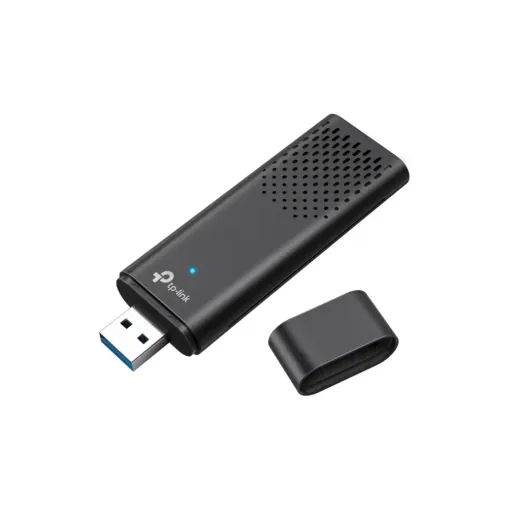
Tarjeta de Red USB Wifi TPLINK Archer TX20U AX1800L 690En Sycom Router Inalambrico MERCUSYS MR70X AX1800 Dual Band Wifi 6L 1,950En Sycom
Router Inalambrico MERCUSYS MR70X AX1800 Dual Band Wifi 6L 1,950En Sycom Router TPLINK Mesh Deco X10 AX1500 Wifi 6 (1 Pieza)L 1,995En Sycom
Router TPLINK Mesh Deco X10 AX1500 Wifi 6 (1 Pieza)L 1,995En Sycom Repetidor Cudy 1200Mbps Dual Band 5Ghz Wifi 6 Re1500L 645En Acosa
Repetidor Cudy 1200Mbps Dual Band 5Ghz Wifi 6 Re1500L 645En Acosa Switch 6 Puertos 10/100 Mbps C/Poe+4 Puertos Cudy P/Escritorio Fs1006PL 625En Acosa
Switch 6 Puertos 10/100 Mbps C/Poe+4 Puertos Cudy P/Escritorio Fs1006PL 625En Acosa Router Inalambrico TPLINK Archer AX23 Wifi 6 AX1800L 2,150.01En Sycom
Router Inalambrico TPLINK Archer AX23 Wifi 6 AX1800L 2,150.01En Sycom Switch 8 Puertos 10/100/1000 Mbps Tp-Link Para Escritorio Ls1008GL 609.01En Acosa
Switch 8 Puertos 10/100/1000 Mbps Tp-Link Para Escritorio Ls1008GL 609.01En Acosa Router TPLINK Mesh Deco M5 AC1300 (1 Pieza)L 2,195.01En Sycom
Router TPLINK Mesh Deco M5 AC1300 (1 Pieza)L 2,195.01En Sycom Switch 8 Puertos 10/100/1000 Mbps Cudy Gigabit Metal Gs108L 595En Acosa
Switch 8 Puertos 10/100/1000 Mbps Cudy Gigabit Metal Gs108L 595En Acosa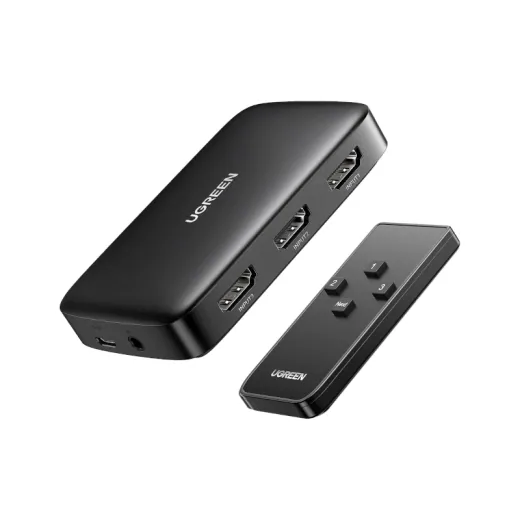
Switch 3 Puertos Hdmi 4K Cm332 UgreenL 595En Acosa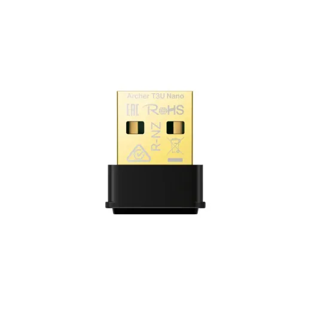
Tarjeta de Red USB Wifi TPLINK Archer T3U Nano AC1300 Dual BandL 595En Sycom Access Point TPLink MU-MIMO AC1200 EAP225 WiFi 5 Indoor/Outdoor OMADAL 2,250En Sycom
Access Point TPLink MU-MIMO AC1200 EAP225 WiFi 5 Indoor/Outdoor OMADAL 2,250En Sycom Access Point TP-Link OMADA EAP615-WALL AX1800 WIFI 6L 2,300En Sycom
Access Point TP-Link OMADA EAP615-WALL AX1800 WIFI 6L 2,300En Sycom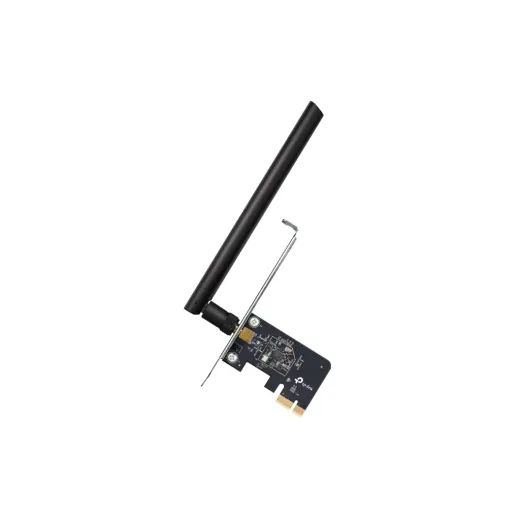
Tarjeta de Red PCIE TPLINK Archer T2E AC600 Dual BandL 575En Sycom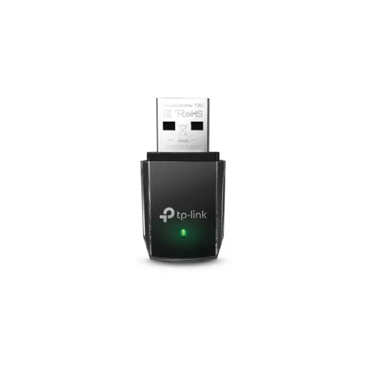
Tarjeta de Red USB Wifi TPLINK Archer T3U Mini AC1300 Dual BandL 560En Sycom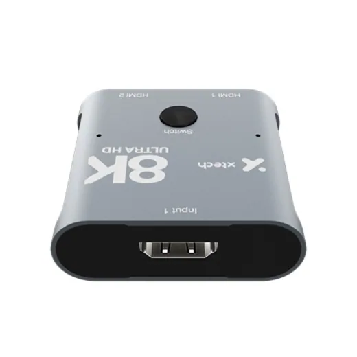
Switch 2 Puertos Hdmi 8K Bidireccional Xha-440 XtechL 545En Acosa Repetidor Tp-Link 300Mbps 2.4Ghz D/Pared Access Point Re315L 545En Acosa
Repetidor Tp-Link 300Mbps 2.4Ghz D/Pared Access Point Re315L 545En Acosa Router Tp-Link 2402Mbps Inalambrico 5Ghz Ax3000 Dual Band Wifi 6L 2,429En Acosa
Router Tp-Link 2402Mbps Inalambrico 5Ghz Ax3000 Dual Band Wifi 6L 2,429En Acosa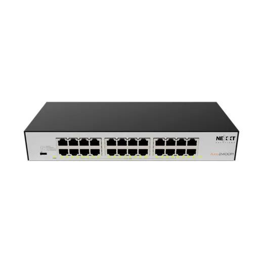
Switch 24 Puertos NexxtL 2,495.01En Acosa Access Point TPLINK MU-MIMO AC1750 EAP245 OmadaL 2,495.01En Sycom
Access Point TPLINK MU-MIMO AC1750 EAP245 OmadaL 2,495.01En Sycom Switch 8 Puertos 10/100/1000 Mbps Mercusys P/Escritorio Ms108gL 494.99En Acosa
Switch 8 Puertos 10/100/1000 Mbps Mercusys P/Escritorio Ms108gL 494.99En Acosa Router Inalambrico TPLINK Archer AX53 AX3000 Dual Band Wifi 6L 2,695En Sycom
Router Inalambrico TPLINK Archer AX53 AX3000 Dual Band Wifi 6L 2,695En Sycom Router Cudy 300Mbps 2.4Ghz N300 Dual BanbL 485En Acosa
Router Cudy 300Mbps 2.4Ghz N300 Dual BanbL 485En Acosa Access Point Cudy AP3000 AX3000 Gigabit Wireless para ExteriorL 2,795.01En Sycom
Access Point Cudy AP3000 AX3000 Gigabit Wireless para ExteriorL 2,795.01En Sycom Repetidor Tp-Link 3000Mbps Dual Band 5Ghz Dual Band Ax3000L 2,839.01En Acosa
Repetidor Tp-Link 3000Mbps Dual Band 5Ghz Dual Band Ax3000L 2,839.01En Acosa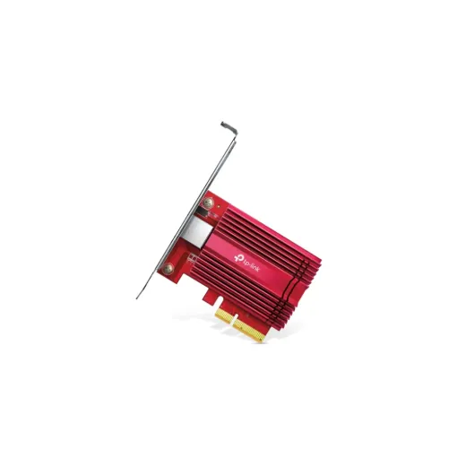
Tarjeta de Red PCIE 10 Gigbite TPLINK TX401L 2,875En Sycom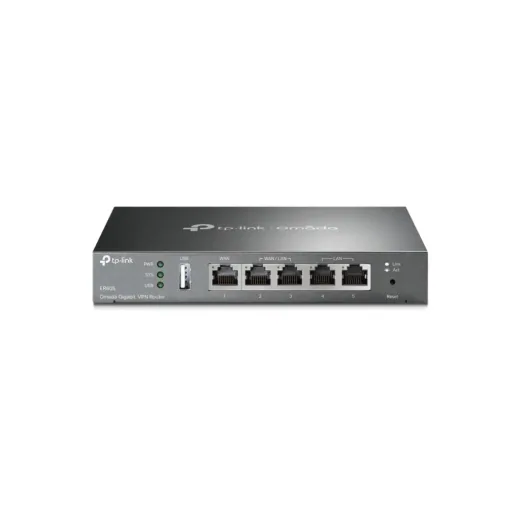
Router Vpn Tplink ER605 OmadaL 2,875En Sycom Switch 5 Puertos 10/100/1000 Mbps Gigabit Tp-Link Para Escritorio Ls1005GL 445En Acosa
Switch 5 Puertos 10/100/1000 Mbps Gigabit Tp-Link Para Escritorio Ls1005GL 445En Acosa Router Linksys HYDRA-6 2000 Pies CobertuL 2,995En Lady Lee
Router Linksys HYDRA-6 2000 Pies CobertuL 2,995En Lady Lee Access Point Grandstream GWN7625L 2,995En Sycom
Access Point Grandstream GWN7625L 2,995En Sycom Tarjeta de Red USB Wifi TPLINK Archer T2U Mini AC 600 Dual BandL 435En Sycom
Tarjeta de Red USB Wifi TPLINK Archer T2U Mini AC 600 Dual BandL 435En Sycom Switch 8 Puertos 10/100/1000 Mbps Cudy Gigabit P/Escritorio Gs108dL 415En Acosa
Switch 8 Puertos 10/100/1000 Mbps Cudy Gigabit P/Escritorio Gs108dL 415En Acosa Tarjeta de Red USB Wifi TPLINK Archer T2UB Nano AC600 Dual Band + Bluetooth N/DL 415En Sycom
Tarjeta de Red USB Wifi TPLINK Archer T2UB Nano AC600 Dual Band + Bluetooth N/DL 415En Sycom Access Point TPLINK AX3000 EAP653 Omada Wifi 6L 3,200En Sycom
Access Point TPLINK AX3000 EAP653 Omada Wifi 6L 3,200En Sycom Switch 5 Puertos 10/100/1000 Mbps Tp-Link P/Escritorio Tl-Sg1005dL 405En Acosa
Switch 5 Puertos 10/100/1000 Mbps Tp-Link P/Escritorio Tl-Sg1005dL 405En Acosa Switch 8 Puertos 10/100 Mbps Tp-Link P/Escritorio Tl-Sf1008dL 395En Acosa
Switch 8 Puertos 10/100 Mbps Tp-Link P/Escritorio Tl-Sf1008dL 395En Acosa Tarjeta de Red PCIE Gigabit X1 TPLINK TG-3468L 395En Sycom
Tarjeta de Red PCIE Gigabit X1 TPLINK TG-3468L 395En Sycom Tarjeta de Red USB Wifi TPLINK Archer T2U Nano AC600 Dual Band N/DL 380.01En Sycom
Tarjeta de Red USB Wifi TPLINK Archer T2U Nano AC600 Dual Band N/DL 380.01En Sycom Access Point TPLINK MU-MIMO AX3000 EAP650 Omada Exterior/Interior Wifi 6L 3,695En Sycom
Access Point TPLINK MU-MIMO AX3000 EAP650 Omada Exterior/Interior Wifi 6L 3,695En Sycom Router TPLINK Mesh Deco M5 AC1300 (2 Pieza)L 3,795En Sycom
Router TPLINK Mesh Deco M5 AC1300 (2 Pieza)L 3,795En Sycom Switch 8 Puertos 10/100 Mbps Tp-Link Para Escritorio Ls1008L 345En Acosa
Switch 8 Puertos 10/100 Mbps Tp-Link Para Escritorio Ls1008L 345En Acosa Switch 5 Puertos 10/100/1000 Mbps Cudy Gigabit Metal Gs105L 345En Acosa
Switch 5 Puertos 10/100/1000 Mbps Cudy Gigabit Metal Gs105L 345En Acosa Switch 5 Puertos 10/100/1000 Mbps Mercusys P/Escritorio Ms105gL 345En Acosa
Switch 5 Puertos 10/100/1000 Mbps Mercusys P/Escritorio Ms105gL 345En Acosa Tarjeta de Red USB Wifi MERCUSYS MA20N Dual BandL 345En Sycom
Tarjeta de Red USB Wifi MERCUSYS MA20N Dual BandL 345En Sycom Router Inalambrico Linksys LN1101 Velop Micro 6 Mesh AX3000 Dual BandL 3,995En Sycom
Router Inalambrico Linksys LN1101 Velop Micro 6 Mesh AX3000 Dual BandL 3,995En Sycom Access Point TPLINK EAP620 AX1800 Omada HD Wifi 6L 4,195En Sycom
Access Point TPLINK EAP620 AX1800 Omada HD Wifi 6L 4,195En Sycom Router Inalambrico Linksys LN11011201 Velop Micro 6 Mesh AX3000 Dual Band 2PKL 4,295En Sycom
Router Inalambrico Linksys LN11011201 Velop Micro 6 Mesh AX3000 Dual Band 2PKL 4,295En Sycom Switch 5 Puertos 10/100 Mbps Tp-Link P/Escritorio Tl-Sf1005dL 305En Acosa
Switch 5 Puertos 10/100 Mbps Tp-Link P/Escritorio Tl-Sf1005dL 305En Acosa Switch 8 Puertos 10/100 Mbps Mercusys P/Escritorio Ms108L 295En Acosa
Switch 8 Puertos 10/100 Mbps Mercusys P/Escritorio Ms108L 295En Acosa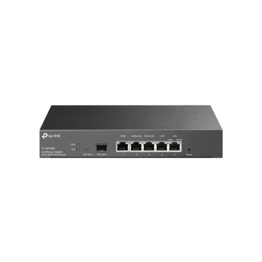
Router VPN TPLINK TL-ER7206 OMADA SafeStreamL 4,500En Sycom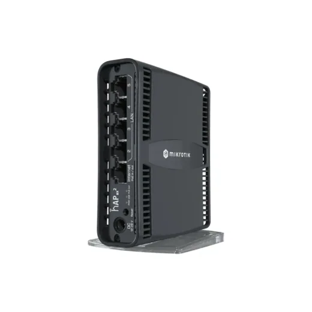
Router Mikrotik hAP ax2 Wi-Fi6 5 puertos Gigabit C52iG-5HaxD2HaxD-TCL 4,542.5En Sycom Switch 5 Puertos 10/100/1000 Mbps Cudy P/Escritorio Gs105dL 290En Acosa
Switch 5 Puertos 10/100/1000 Mbps Cudy P/Escritorio Gs105dL 290En Acosa Tarjeta de Red PCIE Wifi TPLINK TL-WN881ND 300MbpsL 290En Sycom
Tarjeta de Red PCIE Wifi TPLINK TL-WN881ND 300MbpsL 290En Sycom Tarjeta de Red PCIE Gigabit X1 Ugreen 30771L 287.5En Sycom
Tarjeta de Red PCIE Gigabit X1 Ugreen 30771L 287.5En Sycom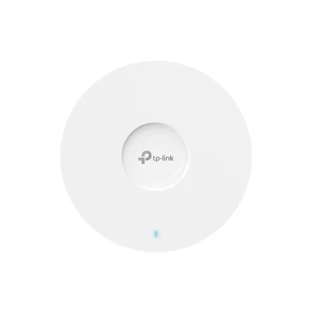
Access Point TPLINK EAP670 AX5400 Omada Wifi 6L 4,800En Sycom Router Inalambrico Linksys Pro6 LN3121-LA AX5400 Dual Band Wifi 6L 4,995En Sycom
Router Inalambrico Linksys Pro6 LN3121-LA AX5400 Dual Band Wifi 6L 4,995En Sycom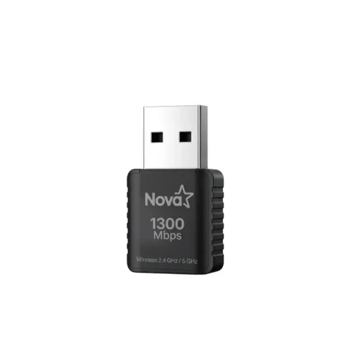
Adaptador USB Wifi Nova UWF-908 1300Mbps Dual Band 5G 2.4G E010-174L 260En Sycom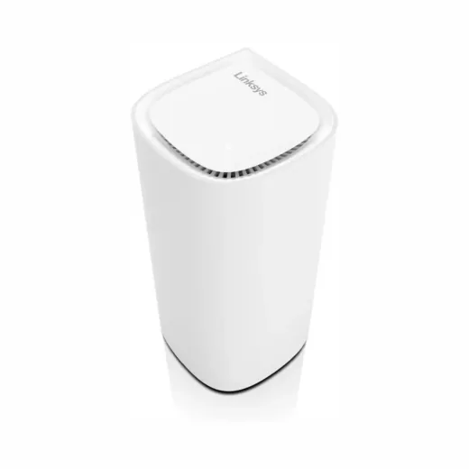
Router Wifi Linksys Velop Pro 6E MX6201 1PackL 5,295En Sycom Switch 8 Puertos 10/100 Mbps Cudy P/Escritorio Fs108DL 245En Acosa
Switch 8 Puertos 10/100 Mbps Cudy P/Escritorio Fs108DL 245En Acosa Switch 5 Puertos 10/100 Mbps Mercusys P/Escritorio Ms105L 245En Acosa
Switch 5 Puertos 10/100 Mbps Mercusys P/Escritorio Ms105L 245En Acosa Router Mercusys Mesh Halo H47BE(2-pack) BE9300 Wifi 7L 5,750En Sycom
Router Mercusys Mesh Halo H47BE(2-pack) BE9300 Wifi 7L 5,750En Sycom Tarjeta de Red USB Wifi MERCUSYS MW150US 150 MbpsL 230En Sycom
Tarjeta de Red USB Wifi MERCUSYS MW150US 150 MbpsL 230En Sycom Tarjeta de Red USB Wifi TPLINK TL-WN727N 150 Mbps 2.4GhzL 230En Sycom
Tarjeta de Red USB Wifi TPLINK TL-WN727N 150 Mbps 2.4GhzL 230En Sycom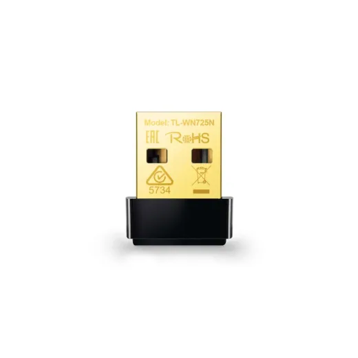
Tarjeta de Red USB Wifi TPLINK TL-WN725N N 150MbpsL 230En Sycom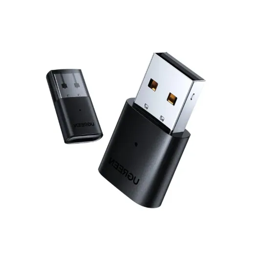
Adaptador Bluetooth Usb 5.0 Cm390 UgreenL 222.5En Acosa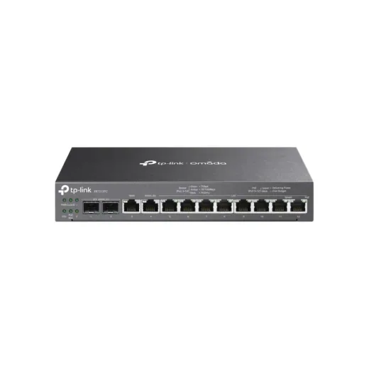
Router Vpn Tplink ER7212PC Omada 3 In 1 PoeL 5,995En Sycom Adaptador Bluetooth Usb 5.4 Nano Tp-Link Ub500L 218.99En Acosa
Adaptador Bluetooth Usb 5.4 Nano Tp-Link Ub500L 218.99En Acosa Router Linksys ATLAS-6 Mesh 2 PackL 6,295En Lady Lee
Router Linksys ATLAS-6 Mesh 2 PackL 6,295En Lady Lee Switch 8 Puertos 10/100 Mbps Con PoE HikvisionL 1,279En Acosa
Switch 8 Puertos 10/100 Mbps Con PoE HikvisionL 1,279En Acosa Switch 16 Puertos 10/100 Mbps Cudy Metal Fs1016L 945En Acosa
Switch 16 Puertos 10/100 Mbps Cudy Metal Fs1016L 945En Acosa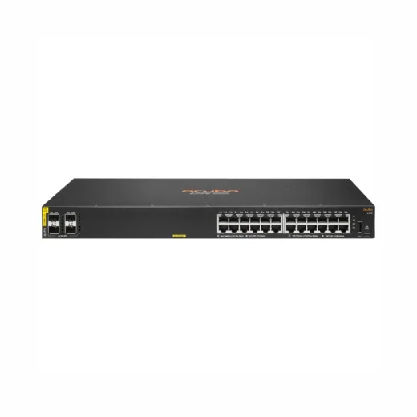
Switch 24 Puertos Aruba HP 6100 JL678A#ABA Gigabit LIQUIDACIONL 26,450En Sycom Switch 5 Puertos Wan/Lan 800mbps Tp-Link Gigabit Tl-Er5120L 2,849En Acosa
Switch 5 Puertos Wan/Lan 800mbps Tp-Link Gigabit Tl-Er5120L 2,849En Acosa Repetidor De Señal Hikvision Ds-Pr1-WbL 3,119En Acosa
Repetidor De Señal Hikvision Ds-Pr1-WbL 3,119En Acosa Router Hikvison 300Mbps Inalambrico 2.4Ghz 300M Dual BandL 395En Acosa
Router Hikvison 300Mbps Inalambrico 2.4Ghz 300M Dual BandL 395En Acosa
Mostrando 120 de 124. Ver todos con filtros en el comparador.
Preguntas frecuentes
¿Dónde están más baratos los routers y redes en Honduras?
Entre los 2 routers y redes que se venden en 2 o más tiendas, Sycom tuvo el precio más bajo en 1 (50%), según los precios del 14 de noviembre de 2026. Depende del producto: revisa la tabla de cada uno.
¿Cuánto cuestan los routers y redes en Honduras?
Desde L 218.99. Comparamos 124 productos de 4 tiendas.
¿Qué tiendas comparan?
Sycom, Acosa, Diunsa, Lady Lee.